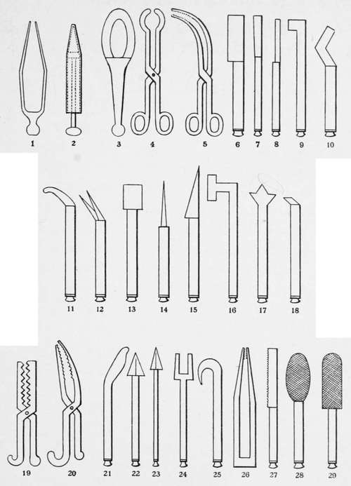

Chapter VIII. Oral Surgery And The Minor Surgical Specialities
Description
This section is from the book "Medieval Medicine", by James J. Walsh. Also available from Amazon: Medieval Medicine..
Chapter VIII. Oral Surgery And The Minor Surgical Specialities
The surgical specialities, as they are called—that is, the surgery of the mouth, throat, and nose, and of the eye and ear, as well of course as of certain other portions of the body—have developed to a striking extent in our time. As a consequence of this recent development, there is an impression prevalent that this is the first time that serious attention has been paid by surgeons to these phases of their work. The feeling is probably that the minor operations usually required in the surgical specialities were either thought so trivial, or involved such delicate technique, that they never received due attention, rather than that they were deliberately neglected.
Because of this very general persuasion, even among physicians, it is all the more interesting to trace the phases of attention during the Middle Ages to these special subjects in surgery, which was far from lacking at any time, and which led at various periods to some rather important developments. While specialism is considered new by most people, it must not be forgotten that at every time in the world's history, when men have had much chance to think about themselves rather than the actual necessities of the situation in which they were placed, and the things they were compelled to do for actual self-preservation, specialism has enjoyed a period of more or less intense evolution. It is rather easy to trace this in the Ebers Papyrus near the beginning of the second millennium b.c.; and Herodotus called attention to the fact that the old Egyptians had divided the practice of medicine into many specialities. His passage on the subject is well known.*
If the surgical specialities had been neglected in the Middle Ages, then that fact would have constituted the surest evidence of that backwardness of medical and surgical progress which is usually supposed to have existed at that time. But the real story is exactly to the contrary, and has many surprises in it because of the anticipations of very recent advances which it represents.
* " Physicke is so studied and practised with the Egyptians that every disease hath his several physicians, who striveth to excell in healing that one disease and not to be expert in curing many. Whereof it cometh that every corner of that country is full of physicians. Some for the eyes, others for the head, many for the teeth, not a few for the stomach and the inwards".
The Ebers Papyrus shows that special attention was paid to diseases of the eyes, the nose, and throat, and we.
It would be surprising, then, if we were to find no attention paid to dentistry during the Middle Ages. As a matter of fact, a number of the old surgeons include in their textbooks of surgery the discussion of oral surgery. Aetius evidently knew much about the hygiene of the teeth, and discusses extraction and the cure of fistulae of the gums as well as the surgical treatment of many other lesions of the mouth. Paul of iEgina in the century after Aetius has even more details; and while they both have traditions of operations upon these from very early times. Conservative surgery of the teeth, and the application of prosthetic dental apparatus, being rather cosmetic than absolutely necessary, might possibly be expected not to have developed until comparatively recent times ; but apart from the traditions in Egypt with regard to this speciality, which are rather dubious, we have abundant evidence of the definite development of dentistry from the long ago. The old Etruscans evidently paid considerable attention to prosthetic dentistry, for we have specimens from the Etruscan tombs which show that they did bridge work in gold, supplied artificial teeth, and used many forms of dental apparatus. At Rome the Laws of the Twelve Tables {circa 450 b.c.) forbade the burying of gold with a corpse except such as was fastened to the teeth, showing that the employment of gold in the mouth for dental repair must have been rather common. We have specimens of gold caps for teeth from the early Roman period; and there is even a well-confirmed tradition of the transplantation of teeth, a practice which seems to have been taken up again in the later Middle Ages, and then allowed to lapse once more until our own time quote mainly from older authors, there seems no doubt that they themselves must have had considerable practical experience in the treatment of the teeth and had made not a few observations. The Arabians took up the subject, and discussed dental diseases and their treatment rationally and in considerable detail. Abulcassis particularly has much that is of significance and interest. We have pictures of two score of dental instruments that were used by him. The Arabs not only treated and filled carious teeth, and even replaced those that were lost, but they also corrected deformities of the mouth and the dental arches. Orthodontia is usually thought of as of much later origin, yet no one who knows Abulcassis's work can speak of efforts at straightening the teeth as invented after his time.
Surgical, Instruments Of The Arabs, According To Abuixasim.
After plates in Gurlt's " Geschichte der Chirurgie".
1. A pincher for extracting foreign bodies from the ear.
2. An ear syringe for injections.
3. A tongue depressor.
4. Concave scissors for the removal of tonsils.
5. Curved pinchers for foreign bodies in the throat 6 to 29. Instruments for the treatment of the teeth 19 and 20. Forceps.
21 to 25. Levers and hooks for the removal of roots.
26. Strong pinchers for the same.
27. A tooth saw 28 and 29. Files for the teeth.
The great surgeons of the later Middle Ages in their textbooks of surgery usually include remarks on oral surgery, and suggest treatment for the various diseases of the teeth. Guy de Chauliac in " La Grande Chirurgie " lays down certain rules for the preservation of the teeth, and shows that the ordinary causes of dental decay were well recognized in his time. Emphasis was laid by him on not taking foods too hot or too cold, and above all on the advisabilhy of not having either hot or cold food followed by something very different from it in temperature. The breaking of hard things with the teeth was warned against as responsible for such fissures in the enamel as gave opportunity for the development of decay. The eating of sweets, and especially the sticky sweets, preserves, and the like, were recognized as an important source of caries. The teeth were supposed to be cleaned frequently, and not to be cleaned too roughly, for this would do more harm than good.
Continue to:
- prev: Surgeons Outside Of Italy. Surgeons Of The West Of Europe. Part 6
- Table of Contents
- next: Oral Surgery And The Minor Surgical Specialities. Part 2